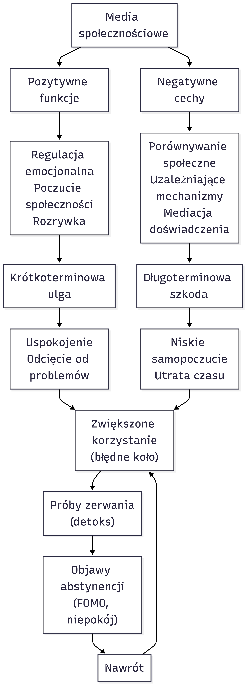

Wprowadzenie do metodologii badań społecznych
Analiza danych jakościowych
Wydział Nauk Społecznych, Uniwersytet SWPS
Plan wykładu
- Co to jest analiza jakościowa i kiedy jej używamy?
- Jak przygotować dane do analizy?
- Kodowanie krok po kroku - jak to działa w praktyce?
- Jak budować kategorie i wyciągać wnioski?
- Podstawowe narzędzia do analizy
- Jak upewnić się, że analiza jest wiarygodna?
Czym jest analiza jakościowa?
- Odpowiada na pytania: “Dlaczego?”, “Jak?”, “Co to znaczy?”
- Bada znaczenia: co ludzie mają na myśli, jak rozumieją świat
- Szuka wzorców: powtarzające się tematy w wypowiedziach
- Przykład: Dlaczego młodzi ludzie nie głosują? (nie tylko: ilu nie głosuje)
Kiedy używamy analizy jakościowej?
- Gdy chcemy zrozumieć doświadczenia ludzi
- Gdy badamy nowe zjawiska, o których mało wiemy
- Gdy pytamy “dlaczego” i “jak”, nie “ile”
- Gdy interesuje nas kontekst i znaczenie
- Przykład: Jak Polacy rozumieją demokrację? Co to dla nich znaczy?
Jakie dane analizujemy?
- Wywiady - transkrypcje rozmów z respondentami
- Obserwacje - notatki terenowe, dzienniki badawcze
- Dokumenty - artykuły, pamiętniki, posty w mediach społecznościowych
- Materiały wizualne - zdjęcia, filmy, plakaty wyborcze
- Wszystko to co zawiera teksty lub można opisać słowami
Krok 1: Przygotowanie danych
- Transkrypcja nagrań - przepisz rozmowy słowo w słowo
- Organizacja plików - nazwij pliki jasno (np. wywiad_01_student.docx)
- Anonimizacja - usuń prawdziwe imiona, zamień na pseudonimy
- Przeczytaj wszystko - zapoznaj się z danymi przed analizą
- Zrób kopie zapasowe - nie zgub swojej pracy!
Jak transkrybować?
- Dosłownie: przepisz dokładnie to, co powiedziano
- Zaznacz pauzy: [pauza], [śmiech], [cisza]
- Popraw błędy? Zależy - dla analizy treści można poprawić, dla analizy dyskursu nie
- Ile czasu? 4-6 godzin transkrypcji na 1 godzinę nagrania
- Narzędzia: można użyć Otter.ai, ale sprawdź i popraw!
Transkrypcja wywiadu - fragment
Respondentka: Kasia, 24 lata, studentka pedagogiki
Temat: Korzystanie z mediów społecznościowych
Badacz: Opowiedz mi, jak wygląda Twój typowy dzień z mediami społecznościowych?
Kasia: No to tak… [pauza] …budzę się rano i pierwsza rzecz, zanim w ogóle wstanę z łóżka, to sięgam po telefon i scrolluję Instagrama. Wiem, że to niezdrowe, ale tak jakoś automatycznie. Nawet nie myślę o tym, po prostu… ręka sama sięga. I wtedy widzę wszystkie te dziewczyny, które już były na siłowni o szóstej rano, zrobiły sobie zdrowe śniadanie, wyglądają idealnie. A ja jeszcze leżę rozczochrana i myślę sobie “Boże, co ja robię ze swoim życiem?” [śmiech] To jest taki… nie wiem… zły start dnia.
Transkrypcja wywiadu - fragment
Badacz: Jak się wtedy czujesz?
Kasia: Gównianie, szczerze mówiąc. Taka… mniejsza. Jakbym była w tyle za wszystkimi. Ale jednocześnie nie mogę przestać scrollować, bo może zobaczę coś ciekawego, coś co mnie rozśmieszyń. To jest jak uzależnienie, naprawdę. Czasami siedzę tak pół godziny, godzinę, i nawet nie zauważam jak czas leci.
Badacz: Wspomniałaś o uczuciu bycia “mniejszą”. Możesz to rozwinąć?
Kasia: No wiesz, wszyscy tam pokazują swoje najlepsze życie. Wakacje, imprezy, sukcesy. Moja koleżanka z liceum właśnie otworzyła własną firmę i non-stop publikuje zdjęcia z jakichś eventów, konferencji. Jest taka… nie wiem… sukcesu pełna. A ja myślę sobie - ja jeszcze studiuję, pracuję na pół etatu w sklepie, mieszkam z rodzicami. Wiem, że to głupie porównywanie się, bo każdy ma swoje tempo, ale trudno się oprzeć. Instagram to jedno wielkie porównywanie się.
Transkrypcja wywiadu - fragment
Badacz: A są jakieś pozytywne strony korzystania z social mediów?
Kasia: Tak, oczywiście! Jak jestem smutna albo zestresowana, to włączam TikToka i mogę godzinami oglądać śmieszne filmiki. To mnie uspokaja, odcina od problemów. Albo jak czuję się samotna, to scrolluję i widzę co robią znajomi, czuję się jakby… połączona z nimi, wiesz? Nawet jak nie rozmawiamy bezpośrednio.
Ale z drugiej strony, jak spędzę tam za dużo czasu, to potem czuję się jeszcze gorzej. Bo zmarnowałam trzy godziny na scrollowanie, nic produktywnego nie zrobiłam, i wracam do tego uczucia że jestem do niczego. [pauza] To jest taki błędne koło.
Badacz: Jak to wpływa na Twoje zachowanie, relacje z innymi?
Kasia: Oj, wpływa bardzo. Jak jestem z ludźmi, na przykład na kolacji z rodziną, to ciągle sprawdzam telefon. Nie mogę się skupić na rozmowie, bo w głowie mam “może ktoś mi coś napisał”, “może coś ważnego się dzieje”. Mama się denerwuje, mówi że jestem w telefonie. I ma rację, ale nie potrafię tego kontrolować.
Transkrypcja wywiadu - fragment
A jak coś przeżywam, pierwsze co przychodzi mi do głowy to “zrobię zdjęcie i wrzucę na story”. Nawet jak jestem w ładnym miejscu, to zamiast po prostu tam być i czuć tę chwilę, to robię dwadzieścia zdjęć żeby znaleźć to idealne na Instagrama. A potem jak wrzucę, to co chwilę sprawdzam ile lajków dostałam. Jak mało, to czuję się odrzucona. Jak dużo, to jestem happy. [pauza] Chore, prawda? Moje samopoczucie zależy od ilości lajków.
Badacz: Czy próbowałaś kiedyś ograniczyć korzystanie z mediów społecznościowych?
Kasia: Tak, kilka razy robiłam “detoks cyfrowy”. Raz wytrzymałam tydzień bez Instagrama. I wiesz co? Pierwsze dwa dni to było koszmarne. Miałam takie FOMO - fear of missing out - że coś się dzieje, a ja o tym nie wiem. Byłam nerwowa, ciągle chciało mi się sprawdzić telefon. Ale potem zrobiło się lepiej. Byłam bardziej… obecna. Więcej czytałam, więcej rozmawiałam z ludźmi na żywo. Spałam lepiej, bo nie scrollowałam przed snem.
Ale jak tylko wróciłam, to znowu to samo. A nawet gorzej, bo musiałam nadrobić wszystko co przegapiłam [śmiech]. Myślę, że problem jest głębszy - to nie jest tylko narzędzie, to jest styl życia naszego pokolenia. Wszyscy tak mają.
Krok 2: Pierwsze czytanie
- Przeczytaj spokojnie cały materiał
- Zapisuj pierwsze wrażenia: co Cię zaskoczyło? Co się powtarza?
- Notuj pytania: Co to może znaczyć? Dlaczego tak mówią?
- Nie koduj jeszcze - po prostu poznaj dane
- Cel: poczuć materiał, zobaczyć szerszy obraz
Co to jest kodowanie?
- Kod = etykieta, nazwa dla fragmentu danych
- Kodowanie = oznaczanie fragmentów tekstu kodami
- To jak oznaczanie tekstem zakreślaczem, ale każdy kolor ma nazwę
- Przykład: Fragment “Nie głosuję, bo politycy i tak mnie nie słuchają” → kod: brak sprawczości
Jak kodować - praktycznie
- Przeczytaj fragment (zdanie, akapit)
- Zapytaj: O czym tu mowa? Co to znaczy?
- Nadaj nazwę (kod) - krótką, opisową
- Zaznacz fragment i przypisz kod
- Powtarzaj dla kolejnych fragmentów
- Ten sam kod może pasować do wielu fragmentów
Przykład kodowania
Tekst: “Nie chodzę głosować, bo wszystkie partie są takie same. Jeden lepszy od drugiego nie jest. Obiecują i obiecują, a potem nic.”
Kody: - “wszystkie partie są takie same” → postrzegana uniformizacja - “Obiecują i obiecują, a potem nic” → brak zaufania do obietnic - całość → cynizm polityczny
Rodzaje kodowania
- Kodowanie opisowe: co się dzieje? (np. “krytyka polityków”)
- Kodowanie interpretacyjne: dlaczego? co to znaczy? (np. “poczucie wykluczenia politycznego”)
- Kodowanie in vivo: używasz dokładnych słów respondenta (np. “cyrk polityczny”)
- Zaczynasz od opisowego, potem przechodzisz do interpretacyjnego
Pierwsza runda kodowania
- Koduj wszystko, co wydaje się istotne dla pytania badawczego
- Nie martw się o zbyt wiele kodów - później je uporządkujesz
- Bądź konsekwentny: ten sam fragment = ten sam kod
- Twórz nowe kody gdy potrzeba
- Efekt: 50-200 kodów to normalne na początku
Druga runda kodowania
- Przejrzyj kody: które są podobne? które można połączyć?
- Grupuj kody w większe kategorie
- Przykład: kody “brak zaufania”, “cynizm”, “rozczarowanie” → kategoria: negatywne postawy wobec polityki
- Zmniejsz liczbę kategorii do 5-15 głównych
Budowanie kategorii
- Kategoria = grupa powiązanych kodów
- Nazywaj kategorie tak, żeby oddawały istotę grupy kodów
- Szukaj związków: Jak kategorie się łączą? Co je wywołuje?
- Przykład hierarchii:
- KATEGORIA: Absencja wyborcza
- Podkategoria: Przyczyny strukturalne
- Kod: brak czasu
- Kod: problemy z rejestracją
- Podkategoria: Przyczyny strukturalne
- KATEGORIA: Absencja wyborcza
Interpretacja - wyciąganie wniosków
- Szukaj wzorców: Co się powtarza w danych?
- Szukaj różnic: Jak różne grupy mówią inaczej?
- Szukaj związków: Co prowadzi do czego? Co jest przyczyną, a co skutkiem?
- Wróć do pytania badawczego: Co te kategorie mówią o Twoim problemie?
- Używaj cytatów jako dowodów dla swoich wniosków
Rodzaje analizy jakościowej
Analiza tematyczna - najprostsza, szukanie głównych tematów - Dobra na początek!
Analiza treści - systematyczne liczenie ile razy coś się pojawia
Teoria ugruntowana - budowanie teorii krok po kroku z danych
Analiza narracyjna - jak ludzie konstruują swoje historie
Analiza dyskursu - jak język tworzy rzeczywistość
Analiza tematyczna - dla początkujących
- Zapoznaj się z danymi - przeczytaj wszystko
- Generuj kody początkowe - oznacz interesujące fragmenty
- Szukaj tematów - grupuj kody w tematy
- Przejrzyj tematy - czy pasują do danych?
- Nazwij tematy - nadaj jasne, opisowe nazwy
- Napisz raport - opisz tematy z cytatami jako przykładami
Jak zapewnić jakość analizy?
Problem: Analiza jakościowa jest subiektywna - jak wiemy, że jest dobra?
Rozwiązania:
- Triangulacja - porównaj z innymi źródłami/metodami
- Member checking - pokaż wyniki respondentom: czy się zgadzają?
- Peer debriefing - przedyskutuj z kolegami/promotorem
- Bogaty opis - podaj dużo szczegółów, cytatów
- Audit trail - zapisuj decyzje: dlaczego ten kod? dlaczego ta kategoria?
Czego unikać - typowe błędy
- Za szybkie kodowanie - poświęć czas na poznanie danych
- Zbyt ogólne kody - “problemy”, “opinie” nic nie mówią
- Zbyt szczegółowe kody - każde zdanie inny kod = chaos
- Brak memo - zapisuj swoje myśli i decyzje!
- Cherry-picking - nie wybieraj tylko cytatów, które pasują do Twojej tezy
- Ignorowanie przypadków odstających - dlaczego ktoś mówi inaczej?
Memo - Twój dziennik analityczny
- Co to: notatki o Twoich decyzjach i przemyśleniach
- Zapisuj: dlaczego stworzyłeś ten kod? co widzisz w danych?
- Przykład memo: “Zauważyłam, że młodsi respondenci używają języka walki (‘bitwa’, ‘wojna’) mówiąc o polityce. Starsi używają języka rozczarowania (‘już nie wierzę’). Może to związek z socjalizacją polityczną?”
- Później memo pomogą Ci pisać analizę!
Ile kodować? Nasycenie teoretyczne
- Pytanie: Kiedy przestać kodować?
- Odpowiedź: Gdy przestajesz znajdować nowe tematy
- Nasycenie = kolejne wywiady nie dodają nowych informacji
- Praktycznie: zwykle 12-20 wywiadów dla homogenicznej grupy
- Nie ma sztywnej liczby - zależy od złożoności tematu
Pisanie wyników analizy
Struktura:
- Przedstaw kategorię/temat - nazwij i wyjaśnij
- Podaj przykłady - cytaty ilustrujące kategorię
- Interpretuj - co to znaczy? dlaczego ważne?
- Połącz z teorią - jak to pasuje do literatury?
Cytaty: krótkie (2-4 zdania), relevantne, anonimowe - “Jak powiedziała Agnieszka (28 lat, studentka): ‘…’”
Etyka w analizie jakościowej
- Szanuj głosy respondentów - nie wypaczyj ich słów
- Anonimowość - zmień szczegóły identyfikujące
- Kontekst - nie wyrywaj cytatów z kontekstu
- Wrażliwe tematy - zastanów się, czy publikować pewne cytaty
- Zwrot dla uczestników - jak Twoje badanie im pomoże?
Runda 1: Kodowanie odkrywcze
Fragment 1: Początek dnia
TEKST: “Budzę się rano i pierwsza rzecz, zanim w ogóle wstanę z łóżka, to sięgam po telefon i scrolluję Instagrama. Wiem, że to niezdrowe, ale tak jakoś automatycznie. Nawet nie myślę o tym, po prostu… ręka sama sięga. I wtedy widzę wszystkie te dziewczyny, które już były na siłowni o szóstej rano, zrobiły sobie zdrowe śniadanie, wyglądają idealnie. A ja jeszcze leżę rozczochrana i myślę sobie ‘Boże, co ja robię ze swoim życiem?’ [śmiech] To jest taki… nie wiem… zły start dnia.”
KODOWANIE:
| Fragment tekstu | Kod | Notatka |
|---|---|---|
| “sięgam po telefon i scrolluję Instagrama” | AUTOMATYCZNE ZACHOWANIE | Pierwsze co robi rano, bez świadomej decyzji |
| “Wiem, że to niezdrowe, ale tak jakoś automatycznie” | BRAK KONTROLI NAD UŻYWANIEM | Świadomość problemu, ale brak kontroli |
| “Nawet nie myślę o tym, po prostu… ręka sama sięga” | NIEŚWIADOMY AUTOMATYZM | Metafora - ciało działa samo |
| “widzę wszystkie te dziewczyny, które już były na siłowni” | PORÓWNYWANIE SIĘ Z INNYMI | Natychmiastowe porównanie społeczne |
| “co ja robię ze swoim życiem?” | POCZUCIE NIEDOSTATECZNOŚCI | Negatywna samoocena w wyniku porównania |
| “zły start dnia” | NEGATYWNY WPŁYW NA NASTRÓJ | Ogólna ocena emocjonalna |
Fragment 2: Uczucia związane z Instagramem
TEKST: “Gównianie, szczerze mówiąc. Taka… mniejsza. Jakbym była w tyle za wszystkimi. Ale jednocześnie nie mogę przestać scrollować, bo może zobaczę coś ciekawego, coś co mnie rozśmieszyń. To jest jak uzależnienie, naprawdę. Czasami siedzę tak pół godziny, godzinę, i nawet nie zauważam jak czas leci.”
KODOWANIE:
| Fragment tekstu | Kod | Notatka |
|---|---|---|
| “Gównianie… mniejsza. Jakbym była w tyle” | POCZUCIE BYCIA GORSZĄ | Silna negatywna emocja |
| “jednocześnie nie mogę przestać scrollować” | KOMPULSYWNE KORZYSTANIE | Paradoks: czuje się źle, ale nie może przestać |
| “może zobaczę coś ciekawego, coś co mnie rozśmieszyń” | POSZUKIWANIE ROZRYWKI | Pozytywna motywacja |
| “To jest jak uzależnienie” | METAFORA UZALEŻNIENIA | Własne określenie problemu |
| “czasami siedzę tak pół godziny, godzinę” | UTRATA POCZUCIA CZASU | Niewiedza o upływającym czasie |
| “nawet nie zauważam jak czas leci” | CZASOWA DEZORIENTACJA | Brak świadomości |
Fragment 3: Porównywanie się
TEKST: “Wszyscy tam pokazują swoje najlepsze życie. Wakacje, imprezy, sukcesy. Moja koleżanka z liceum właśnie otworzyła własną firmę i non-stop publikuje zdjęcia z jakichś eventów, konferencji. Jest taka… sukcesu pełna. A ja myślę sobie - ja jeszcze studiuję, pracuję na pół etatu w sklepie, mieszkam z rodzicami. Wiem, że to głupie porównywanie się, bo każdy ma swoje tempo, ale trudno się oprzeć. Instagram to jedno wielkie porównywanie się.”
KODOWANIE:
| Fragment tekstu | Kod | Notatka |
|---|---|---|
| “Wszyscy tam pokazują swoje najlepsze życie” | SELEKCJA WYSELEKCJONOWANYCH TREŚCI | Natura platformy - tylko pozytywne |
| “moja koleżanka… Jest taka… sukcesu pełna” | PORÓWNYWANIE ZE ZNAJOMYMI | Konkretny przykład |
| “ja jeszcze studiuję, pracuję na pół etatu” | POCZUCIE BYCIA DO TYŁU | Własna sytuacja vs. innych |
| “Wiem, że to głupie porównywanie się” | ŚWIADOMOŚĆ MECHANIZMU | Rozumie, co się dzieje |
| “trudno się oprzeć” | TRUDNOŚĆ W POWSTRZYMANIU SIĘ | Mimo świadomości nie może przestać |
| “Instagram to jedno wielkie porównywanie się” | NATURA SAMEJ PLATFORMY | Określa istotę Instagrama |
Fragment 4: Pozytywne strony
TEKST: “Jak jestem smutna albo zestresowana, to włączam TikToka i mogę godzinami oglądać śmieszne filmiki. To mnie uspokaja, odcina od problemów. Albo jak czuję się samotna, to scrolluję i widzę co robią znajomi, czuję się jakby… połączona z nimi, wiesz?”
KODOWANIE:
| Fragment tekstu | Kod | Notatka |
|---|---|---|
| “jak jestem smutna albo zestresowana, to włączam TikToka” | REGULACJA EMOCJONALNA | Pozytywna funkcja mediów |
| “To mnie uspokaja, odcina od problemów” | UCIECZKA PRZED STRESEM | Coping mechanism |
| “mogę godzinami oglądać śmieszne filmiki” | POSZUKIWANIE ZABAWY | Rozrywka |
| “czuję się jakby… połączona z nimi” | POCZUCIE SPOŁECZNOŚCI | Nawet bez bezpośredniej interakcji |
| “widzę co robią znajomi” | MONITOROWANIE SPOŁECZNE | Śledzenie życia innych |
Fragment 5: Konsekwencje użytkowania
TEKST: “Ale z drugiej strony, jak spędzę tam za dużo czasu, to potem czuję się jeszcze gorzej. Bo zmarnowałam trzy godziny na scrollowanie, nic produktywnego nie zrobiłam, i wracam do tego uczucia że jestem do niczego. To jest taki błędne koło.”
KODOWANIE:
| Fragment tekstu | Kod | Notatka |
|---|---|---|
| “jak spędzę tam za dużo czasu, to potem czuję się jeszcze gorzej” | POGORSZENIE NASTROJU | Paradoks - miało pomóc, pogorszyło |
| “zmarnowałam trzy godziny na scrollowanie” | POCZUCIE ZMARNOWANEGO CZASU | Retrospektywna ocena |
| “nic produktywnego nie zrobiłam” | BRAK PRODUKTYWNOŚCI | Własny standard wartości czasu |
| “jestem do niczego” | POCZUCIE BEZWARTOŚCIOWOŚCI | Skrajna negatywna samoocena |
| “błędne koło” | CYKL NEGATYWNYCH EMOCJI | Metafora procesu |
Fragment 6: Wpływ na relacje
TEKST: “Jak jestem z ludźmi, na przykład na kolacji z rodziną, to ciągle sprawdzam telefon. Nie mogę się skupić na rozmowie, bo w głowie mam ‘może ktoś mi coś napisał’. Mama się denerwuje, mówi że jestem w telefonie.”
KODOWANIE:
| Fragment tekstu | Kod | Notatka |
|---|---|---|
| “ciągle sprawdzam telefon” | DYSTRAKTYCYJNE ZACHOWANIE | Podczas spotkań z rodziną |
| “Nie mogę się skupić na rozmowie” | BRAK KONCENTRACJI NA OBECNOŚCI | Fizycznie obecna, mentalnie gdzie indziej |
| “w głowie mam ‘może ktoś mi coś napisał’” | LĘK PRZED PRZEOCZENIEM WIADOMOŚCI | FOMO w real-time |
| “mama się denerwuje” | KONFLIKT W RELACJACH | Konsekwencje dla relacji rodzinnych |
Fragment 7: Instagram a prezentacja życia
TEKST: “A jak coś przeżywam, pierwsze co przychodzi mi do głowy to ‘zrobię zdjęcie i wrzucę na story’. Nawet jak jestem w ładnym miejscu, to zamiast po prostu tam być i czuć tę chwilę, to robię dwadzieścia zdjęć żeby znaleźć to idealne na Instagrama. A potem jak wrzucę, to co chwilę sprawdzam ile lajków dostałam. Jak mało, to czuję się odrzucona. Jak dużo, to jestem happy.”
KODOWANIE:
| Fragment tekstu | Kod | Notatka |
|---|---|---|
| “pierwsze co przychodzi mi do głowy to ‘zrobię zdjęcie i wrzucę’” | MEDIACJA DOŚWIADCZENIA | Doświadczenie przez pryzmat mediów |
| “zamiast po prostu tam być i czuć tę chwilę” | ODDALENIE OD “TU I TERAZ” | Utrata bezpośredniości |
| “robię dwadzieścia zdjęć żeby znaleźć to idealne” | PERFEKCJONIZM W PREZENTACJI | Wysiłek w kreację obrazu |
| “co chwilę sprawdzam ile lajków dostałam” | MONITOROWANIE SPOŁECZNEJ WALIDACJI | Obsesyjne sprawdzanie |
| “Jak mało, to czuję się odrzucona. Jak dużo, to jestem happy” | SAMOPOCZUCIE ZALEŻNE OD LAJKÓW | Emocje kontrolowane przez innych |
Fragment 8: Próby detoksu
TEKST: “Raz wytrzymałam tydzień bez Instagrama. I wiesz co? Pierwsze dwa dni to było koszmarne. Miałam takie FOMO - fear of missing out - że coś się dzieje, a ja o tym nie wiem. Byłam nerwowa, ciągle chciało mi się sprawdzić telefon. Ale potem zrobiło się lepiej. Byłam bardziej… obecna. Więcej czytałam, więcej rozmawiałam z ludźmi na żywo. Spałam lepiej, bo nie scrollowałam przed snem.”
KODOWANIE:
| Fragment tekst | Kod | Notatka |
|---|---|---|
| “Pierwsze dwa dni to było koszmarne” | OBJAWY ODSTAWIENIA | Jak przy uzależnieniu |
| “FOMO - fear of missing out” | LĘK PRZED PRZEOCZENIEM | Używa angielskiego terminu |
| “Byłam nerwowa, ciągle chciało mi się sprawdzić” | OBJAWY ABSTYNENCJI | Fizyczna potrzeba |
| “Byłam bardziej… obecna” | ZWIĘKSZONA UWAŻNOŚĆ | Pozytywny efekt detoksu |
| “Spałam lepiej” | POPRAWA ZDROWIA | Konkretna korzyść |
| “Ale jak tylko wróciłam, to znowu to samo” | NAWRÓT DO WZORCÓW | Niemożność utrzymania zmiany |
| Kolumna 1 | Kolumna 2 | Kolumna 3 | Kolumna 4 |
|---|---|---|---|
| 1. Automatyczne zachowanie | 12. Czasowa dezorientacja | 23. Pogorszenie nastroju | 34. Perfekcjonizm w prezentacji |
| 2. Brak kontroli nad używaniem | 13. Selekcja wyselekcjonowanych treści | 24. Poczucie zmarnowanego czasu | 35. Monitorowanie społecznej walidacji |
| 3. Nieświadomy automatyzm | 14. Porównywanie ze znajomymi | 25. Brak produktywności | 36. Samopoczucie zależne od lajków |
| 4. Porównywanie się z innymi | 15. Poczucie bycia do tyłu | 26. Poczucie bezwartościowości | 37. Objawy odstawienia |
| 5. Poczucie niedostateczności | 16. Świadomość mechanizmu | 27. Cykl negatywnych emocji | 38. Lęk przed przeoczeniem (FOMO) |
| 6. Negatywny wpływ na nastrój | 17. Trudność w powstrzymaniu się | 28. Dystraktycyjne zachowanie | 39. Objawy abstynencji |
| 7. Poczucie bycia gorszą | 18. Natura samej platformy | 29. Brak koncentracji na obecności | 40. Zwiększona uważność (podczas detoksu) |
| 8. Kompulsywne korzystanie | 19. Regulacja emocjonalna | 30. Lęk przed przeoczeniem wiadomości | 41. Poprawa zdrowia (podczas detoksu) |
| 9. Poszukiwanie rozrywki | 20. Ucieczka przed stresem | 31. Konflikt w relacjach | 42. Nawrót do wzorców |
| 10. Metafora uzależnienia | 21. Poczucie społeczności | 32. Mediacja doświadczenia | |
| 11. Utrata poczucia czasu | 22. Monitorowanie społeczne | 33. Oddalenie od “tu i teraz” |
Runda 2: Organizacja kodów w kategoriach
| Grupa A Zachowania automatyczne i brak kontroli |
Grupa B Emocje porównawcze |
Grupa C Problemy czasowe |
Grupa D Pozytywne funkcje |
|---|---|---|---|
| Automatyczne zachowanie | Porównywanie się z innymi | Utrata poczucia czasu | Poszukiwanie rozrywki |
| Brak kontroli nad używaniem | Poczucie niedostateczności | Czasowa dezorientacja | Regulacja emocjonalna |
| Nieświadomy automatyzm | Poczucie bycia gorszą | Poczucie zmarnowanego czasu | Ucieczka przed stresem |
| Kompulsywne korzystanie | Porównywanie ze znajomymi | Brak produktywności | Poczucie społeczności |
| Metafora uzależnienia | Poczucie bycia do tyłu | ||
| Trudność w powstrzymaniu się | Poczucie bezwartościowości |
| Grupa E Porównywanie społeczne (struktura platformy) |
Grupa F Mediacja doświadczenia |
Grupa G Walidacja społeczna |
Grupa H Konsekwencje interpersonalne |
|---|---|---|---|
| Selekcja wyselekcjonowanych treści | Mediacja doświadczenia | Monitorowanie społecznej walidacji | Dystraktycyjne zachowanie |
| Natura samej platformy | Oddalenie od “tu i teraz” | Samopoczucie zależne od lajków | Brak koncentracji na obecności |
| Świadomość mechanizmu | Perfekcjonizm w prezentacji | Monitorowanie społeczne | Konflikt w relacjach |
| Grupa I Cykl negatywny |
Grupa J FOMO i lęk |
||
|---|---|---|---|
| Negatywny wpływ na nastrój | Lęk przed przeoczeniem wiadomości | ||
| Pogorszenie nastroju | Lęk przed przeoczeniem (FOMO) | ||
| Cykl negatywnych emocji | Objawy odstawienia | ||
| Objawy abstynencji | |||
| Nawrót do wzorców |
Kategoria 1: Uzależniające cechy platform
Definicja: Zachowania wskazujące na brak kontroli i automatyzm w korzystaniu z mediów społecznościowych
Kody składowe:
- Automatyczne zachowanie
- Brak kontroli nad używaniem
- Nieświadomy automatyzm
- Kompulsywne korzystanie
- Metafora uzależnienia
- Trudność w powstrzymaniu się
Liczba kodów: 6
Kluczowy cytat: “Wiem, że to niezdrowe, ale tak jakoś automatycznie. Nawet nie myślę o tym, po prostu… ręka sama sięga.”
Kategoria 2: negatywne emocje porównawcze
Definicja: Emocje powstające w wyniku porównywania się z innymi użytkownikami
Kody składowe:
- Porównywanie się z innymi
- Poczucie niedostateczności
- Poczucie bycia gorszą
- Porównywanie ze znajomymi
- Poczucie bycia do tyłu
- Poczucie bezwartościowości
Liczba kodów: 6
Kluczowy cytat: “Taka… mniejsza. Jakbym była w tyle za wszystkimi.”
Kategoria 3: porównywanie społeczne (struktura platformy)
Definicja: Sposób, w jaki architektura platformy sprzyja porównywaniu społecznemu
Kody składowe:
- Selekcja wyselekcjonowanych treści
- Natura samej platformy
- Świadomość mechanizmu
Liczba kodów: 3
Kluczowy cytat: “Instagram to jedno wielkie porównywanie się.”
Kategoria 4: czasowa dezorientacja
Definicja: Utrata świadomości upływającego czasu i poczucie jego zmarnowania
Kody składowe:
- Utrata poczucia czasu
- Czasowa dezorientacja
- Poczucie zmarnowanego czasu
- Brak produktywności
Liczba kodów: 4
Kluczowy cytat: “Czasami siedzę tak pół godziny, godzinę, i nawet nie zauważam jak czas leci.”
Kategoria 5: pozytywne funkcje
Definicja: Korzyści i pozytywne aspekty korzystania z mediów społecznościowych
Kody składowe:
- Poszukiwanie rozrywki
- Regulacja emocjonalna
- Ucieczka przed stresem
- Poczucie społeczności
Liczba kodów: 4
Kluczowy cytat: “Jak jestem smutna albo zestresowana, to włączam TikToka i mogę godzinami oglądać śmieszne filmiki. To mnie uspokaja.”
Kategoria 6: mediacja doświadczenia
Definicja: Sposób, w jaki media społecznościowe pośredniczą w doświadczaniu rzeczywistości
Kody składowe:
- Mediacja doświadczenia
- Oddalenie od “tu i teraz”
- Perfekcjonizm w prezentacji
Liczba kodów: 3
Kluczowy cytat: “Zamiast po prostu tam być i czuć tę chwilę, to robię dwadzieścia zdjęć żeby znaleźć to idealne na Instagrama.”
Kategoria 7: walidacja społeczna
Definicja: Uzależnienie samopoczucia od reakcji innych użytkowników
Kody składowe:
- Monitorowanie społecznej walidacji
- Samopoczucie zależne od lajków
- Monitorowanie społeczne
Liczba kodów: 3
Kluczowy cytat: “Jak mało [lajków], to czuję się odrzucona. Jak dużo, to jestem happy.”
Kategoria 8: konsekwencja interpersonalna
Definicja: Wpływ korzystania z mediów na relacje z innymi ludźmi
Kody składowe:
- Dystraktycyjne zachowanie
- Brak koncentracji na obecności
- Konflikt w relacjach
Liczba kodów: 3
Kluczowy cytat: “Mama się denerwuje, mówi że jestem w telefonie. I ma rację, ale nie potrafię tego kontrolować.”
Kategoria 9: cykl negatywnych emocji
Definicja: Proces, w którym media społecznościowe pogarszają nastrój mimo intencji jego poprawy
Kody składowe: - Negatywny wpływ na nastrój - Pogorszenie nastroju - Cykl negatywnych emocji
Liczba kodów: 3
Kluczowy cytat: “To jest taki błędne koło.”
Kategoria 10: FOMO i symptomy uzależnienia
Definicja: Objawy podobne do uzależnienia, włącznie z lękiem przed przeoczeniem i trudnością w przerwaniu użytkowania
Kody składowe:
- Lęk przed przeoczeniem wiadomości
- Lęk przed przeoczeniem (FOMO)
- Objawy odstawienia
- Objawy abstynencji
- Nawrót do wzorców
Liczba kodów: 5
Kluczowy cytat: “Pierwsze dwa dni to było koszmarne. Miałam takie FOMO - fear of missing out.”
Główne tematy
Z 10 kategorii wyłaniają się 4-5 głównych tematów:
Temat 1: Paradoks użyteczności i szkody
Opis: Media społecznościowe służą ważnym funkcjom (regulacja emocjonalna, poczucie społeczności), ale jednocześnie powodują długoterminową szkodę (niskie samopoczucie, uzależnienie).
Kategorie składowe: - Pozytywne funkcje - Cykl negatywnych emocji - Uzależniające cechy platform
Struktura procesu:
Negatywne emocje → Szukanie ulgi w mediach → Krótkoterminowa poprawa
→ Scrollowanie → Porównywanie się → Pogorszenie nastroju
→ Powrót do początkuCytat ilustrujący: “Jak jestem smutna albo zestresowana, to włączam TikToka… To mnie uspokaja. Ale z drugiej strony, jak spędzę tam za dużo czasu, to potem czuję się jeszcze gorzej.”
Temat 2: Porównywanie społeczne jako źródło cierpienia
Opis: Instagram sprzyja nieustannemu porównywaniu się z wyselekcjonowanym obrazem życia innych, co prowadzi do poczucia niedostateczności.
Kategorie składowe: - Porównywanie społeczne (struktura platformy) - Negatywne emocje porównawcze
Struktura:
Wyselekcjonowane treści innych → Automatyczne porównywanie
→ Poczucie bycia gorszą → Świadomość mechanizmu, ale niemożność oporuCytat ilustrujący: “Instagram to jedno wielkie porównywanie się. Wiem, że to głupie porównywanie się, bo każdy ma swoje tempo, ale trudno się oprzeć.”
Temat 3: Mediacja doświadczenia przez walidację społeczną
Opis: Rzeczywistość jest doświadczana przez pryzmat mediów społecznościowych - wydarzenia są wartościowe o tyle, o ile można je zaprezentować online i otrzymać za nie aprobatę.
Kategorie składowe: - Mediacja doświadczenia - Walidacja społeczna
Struktura:
Doświadczenie → Myśl "zrobię zdjęcie" → Tworzenie idealnego obrazu
→ Publikacja → Monitorowanie lajków → Samopoczucie zależne od reakcjiCytat ilustrujący: “Pierwsze co przychodzi mi do głowy to ‘zrobię zdjęcie i wrzucę na story’. Zamiast po prostu tam być i czuć tę chwilę, to robię dwadzieścia zdjęć żeby znaleźć to idealne.”
Temat 4: Utrata autonomii i kontroli
Opis: Kasia ma świadomość problemów związanych z mediami społecznościowymi, ale nie potrafi kontrolować swojego zachowania. Sugeruje to, że problem jest strukturalny (design platformy), nie indywidualny.
Kategorie składowe: - Uzależniające cechy platform - FOMO i symptomy uzależnienia - Konsekwencje interpersonalne
Struktura:
Automatyczne sięganie po telefon → Kompulsywne scrollowanie
→ Próba przerwania (detoks) → Objawy abstynencji → NawrótCytat ilustrujący: “Wiem, że to niezdrowe, ale tak jakoś automatycznie… trudno się oprzeć… nie potrafię tego kontrolować.”
Temat 5: Konsekwencje dla obecności i relacji
Opis: Ciągłe korzystanie z mediów odrywa od “tu i teraz”, wpływa negatywnie na zdolność bycia obecnym w relacjach międzyludzkich.
Kategorie składowe: - Konsekwencje interpersonalne - Czasowa dezorientacja - Mediacja doświadczenia
Cytat ilustrujący: “Nie mogę się skupić na rozmowie, bo w głowie mam ‘może ktoś mi coś napisał’. Mama się denerwuje.”
Interpretacja i wnioski
Model teoretyczny: Błędne koło mediów społecznościowych
Kluczowe obserwacje
- Paradoks świadomości bez kontroli
- Kasia rozumie mechanizmy mediów społecznościowych
- Ma świadomość szkód
- Ale mimo to nie potrafi kontrolować swojego zachowania
- Implikacja: Problem jest strukturalny, nie indywidualny
- Redefinicja doświadczenia
- Doświadczenie jest walidowane przez liczbę lajków
- Wartość chwili zależy od jej “instagramowalności”
- Implikacja: Media społecznościowe zmieniają nie tylko zachowanie, ale sposób doświadczania rzeczywistości
- Porównywanie jako rdzeń problemu
- Instagram sprzyja nieustannemu porównywaniu
- “Najlepsze życie” innych staje się standardem
- Implikacja: Problem tkwi w naturze platformy, nie w jednostce
- Niemożność zerwania
- Próby detoksu kończą się nawrotem
- Objawy podobne do uzależnienia (FOMO, niepokój)
- Implikacja: To nie jest kwestia siły woli
- Konsekwencje społeczne
- Wpływ na relacje rodzinne
- Niemożność bycia obecnym
- Implikacja: Problem wykracza poza jednostkę, dotyczy społeczeństwa
Porównanie z innymi respondentami (hipotetycznie)
Gdybyśmy mieli więcej respondentów, analiza wyglądałaby tak:
Respondent A (Kasia, 24 lata)
Dominujący temat: Porównywanie społeczne + mediacja doświadczenia
Emocje: Poczucie niedostateczności, zależność od walidacji
Wzorzec użytkowania: Kompulsywne, długotrwałe sesje
Respondent B (Hipotetyczny - Marek, 30 lat)
Dominujący temat: Celowe, kontrolowane użytkowanie
Emocje: Poczucie kontroli
Wzorzec użytkowania: Krótkie, planowane sesje do konkretnych celów
Respondent C (Hipotetyczny - Ania, 19 lat)
Dominujący temat: Kompletne uzależnienie + cyberbullying
Emocje: Lęk, izolacja, depresja
Wzorzec użytkowania: Ciągłe, całodzienne korzystanie
Respondent D (Hipotetyczny - Piotr, 45 lat)
Dominujący temat: Minimalne użytkowanie, brak negatywnych efektów
Emocje: Obojętność
Wzorzec użytkowania: Sporadyczne, instrumentalne
Memo analityczne
Memo 1: Paradoks Kasi
Data: 19.01.2026
Zauważyłem fundamentalną sprzeczność w wypowiedzi Kasi. Z jednej strony wielokrotnie podkreśla, że rozumie szkodliwe mechanizmy mediów społecznościowych: - “Wiem, że to niezdrowe” - “Wiem, że to głupie porównywanie się” - “Chore, prawda? Moje samopoczucie zależy od ilości lajków”
Z drugiej strony wielokrotnie podkreśla brak kontroli: - “ale tak jakoś automatycznie” - “trudno się oprzeć” - “nie potrafię tego kontrolować”
Ten paradoks jest kluczowy. To nie jest przypadek niewiedzy czy braku edukacji. Kasia doskonale rozumie, co się dzieje. Problem leży gdzie indziej - w architekturze platformy.
Implikacja teoretyczna: To sugeruje, że rozwiązania edukacyjne (“naucz ludzi, jak zdrowo korzystać z mediów”) mogą być niewystarczające. Problem jest strukturalny i wymaga zmian w regulacji platform.
Pytanie do dalszej analizy: Czy inni respondenci też wykazują tę świadomość bez kontroli? Jeśli tak, to potwierdza hipotezę o strukturalnym charakterze problemu.
Memo 2: Mediacja doświadczenia
Data: 19.01.2026
Kasia opisuje kluczową zmianę w sposobie doświadczania rzeczywistości:
“Jak coś przeżywam, pierwsze co przychodzi mi do głowy to ‘zrobię zdjęcie i wrzucę na story’. Nawet jak jestem w ładnym miejscu, to zamiast po prostu tam być i czuć tę chwilę, to robię dwadzieścia zdjęć żeby znaleźć to idealne na Instagrama.”
To nie jest tylko zachowanie (“robię zdjęcia”). To jest zmiana ontologii doświadczenia. Doświadczenie nie jest już wartościowe samo w sobie - jest wartościowe o tyle, o ile: 1. Da się je sfotografować 2. Zdjęcie będzie “idealne” 3. Inne osoby zaaprobują je (lajki)
Powiązanie z literaturą: To przypomina koncepcję “surveillant assemblage” (Haggerty & Ericson) - życie staje się spektaklem dla niewidocznej publiczności.
Pytanie: Jak to wpływa na autentyczność doświadczenia? Czy Kasia w ogóle może doświadczać rzeczywistości bezpośrednio, bez pośrednictwa platformy?
Memo 3: Błędne koło - struktura procesu
Data: 19.01.2026
Kasia używa metafory “błędnego koła”, którą warto rozwinąć. Proces wygląda tak:
- Start: Czuje się źle (zmęczona, smutna, zestresowana)
- Akcja: Włącza media społecznościowe (TikTok, Instagram)
- Krótkoterminowy efekt: Uspokojenie, rozrywka, odcięcie od problemów
- Scrollowanie: Godzina, dwie scrollowania
- Porównywanie: Widzi “lepsze życie” innych
- Długoterminowy efekt: Czuje się gorzej (zmarnowany czas, poczucie niedostateczności)
- Powrót do punktu 1: Czuje się źle
Pytanie: Czy nawrót jest nieunikniony? Co by musiało się zmienić, żeby Kasia mogła utrzymać zdrowe wzorce?
Memo 4: Język Kasi - samoświadomość
Data: 19.01.2026
Zwróciłem uwagę na język, którego Kasia używa: - “To jest jak uzależnienie, naprawdę” - “Chore, prawda?” - “błędne koło” - “FOMO - fear of missing out” (używa angielskiego terminu, co sugeruje znajomość dyskursu o mediach)
Kasia ma bardzo wysoką samoświadomość. Używa języka klinicznego (“uzależnienie”), krytycznego (“chore”), teoretycznego (“FOMO”).
Obserwacja: To pokolenie (Z, Millennials) wychowało się ze społecznymi mediami, ale również z krytyką mediów społecznościowych. Mają meta-świadomość - wiedzą, że są manipulowani, ale to nie wystarcza, żeby się uwolnić.
Porównanie: To przypomina palenie papierosów - ludzie wiedzą, że szkodzi, ale i tak palą. Świadomość ≠ zmiana zachowania.
Memo 5: Walidacja społeczna jako źródło samopoczucia
Data: 19.01.2026
Najsmutniejszy fragment wywiadu:
“Jak mało [lajków], to czuję się odrzucona. Jak dużo, to jestem happy. Chore, prawda? Moje samopoczucie zależy od ilości lajków.”
Samopoczucie Kasi jest eksternalizowane. Nie zależy od jej wewnętrznej oceny (“jestem zadowolona ze zdjęcia”), ale od reakcji innych.
Mechanizm: 1. Publikuje zdjęcie 2. Czeka na reakcję 3. Reakcja determinuje emocje
To jest forma alienacji - odcięcia od własnych emocji i wartości. Kasia nie wie, czy jest happy, dopóki Instagram jej nie powie (przez liczbę lajków).
Pytanie do teorii: Czy to jest nowa forma alienacji (Marks mówił o alienacji pracy)? Alienacja emocji? Alienacja doświadczenia?
Implikacja: Jeśli całe pokolenie doświadcza tej alienacji, jakie są konsekwencje dla zdrowia psychicznego, demokracji, społeczeństwa?
Praktyczne wskazówki
- Czytaj uważnie, bez założeń
- Nie szukaj potwierdzenia swojej hipotezy
- Pozwól danym “mówić”
- Koduj blisko tekstu
- Używaj słów respondenta (in vivo coding)
- Nie interpretuj za szybko
- Zapisuj memo
- Każda obserwacja, pytanie, pomysł → memo
- To będzie podstawa Twojej analizy
- Koduj wielokrotnie
- Pierwsza runda: odkrywczo
- Druga runda: organizuj
- Trzecia runda: interpretuj
- Szukaj paradoksów
- “Wiem, ale…” = kluczowa obserwacja
- “Z jednej strony… z drugiej…” = napięcie
- Używaj diagramów
- Wizualizuj relacje między kategoriami
- Rysuj procesy (błędne koło)
- Porównuj przypadki
- Jeden respondent = case study
- Wielu respondentów = wzorce
Typowe błędy (czego unikać)
❌ Zbyt szybka interpretacja
“Kasia jest uzależniona” → To Twoja interpretacja, nie kod
✅ Lepiej:
“Metafora uzależnienia (własne słowa respondentki)”
❌ Zbyt ogólne kody
“Problemy”, “Uczucia”, “Media”
✅ Lepiej:
“Poczucie niedostateczności”, “Negatywny wpływ na nastrój”
❌ Ignorowanie wyjątków
Kodowanie tylko fragmentów, które pasują do Twojej tezy
✅ Lepiej:
Koduj wszystko, włącznie z fragmentami, które nie pasują (np. pozytywne funkcje mediów)
❌ Brak kontekstu
Wyrywanie cytatów z kontekstu
✅ Lepiej:
Zawsze sprawdź, co było przed i po cytacie
❌ Projekcja własnych wartości
“Kasia powinna mniej korzystać z mediów”
✅ Lepiej:
“Kasia wyraża konflikt między pragnieniem używania mediów a świadomością szkód”
Pytania do refleksji
Po przeczytaniu tej analizy, zadaj sobie pytania:
- Czy zgadzam się z kodami?
- Które kody są trafne?
- Które bym zmienił?
- Czego brakuje?
- Czy kategorie mają sens?
- Czy kody są dobrze zgrupowane?
- Czy nazwy kategorii są jasne?
- Czy tematy wyjaśniają dane?
- Czy 5 głównych tematów oddaje istotę wywiadu?
- Co jest najważniejsze w doświadczeniu Kasi?
- Czy interpretacja jest uzasadniona?
- Czy mogę podać cytat dla każdego wniosku?
- Czy nie interpretuję nadmiernie?
- Co bym zrobił inaczej?
- Jakie pytania zadałbym Kasi w follow-up?
- Jakie inne tematy warto zbadać?